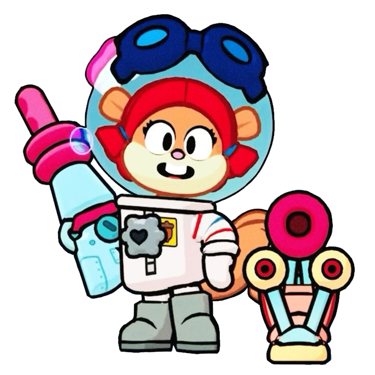
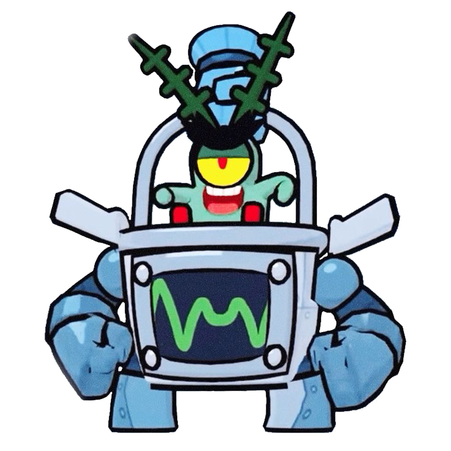
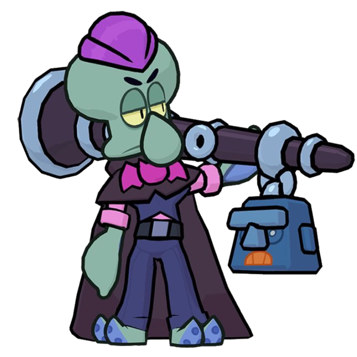
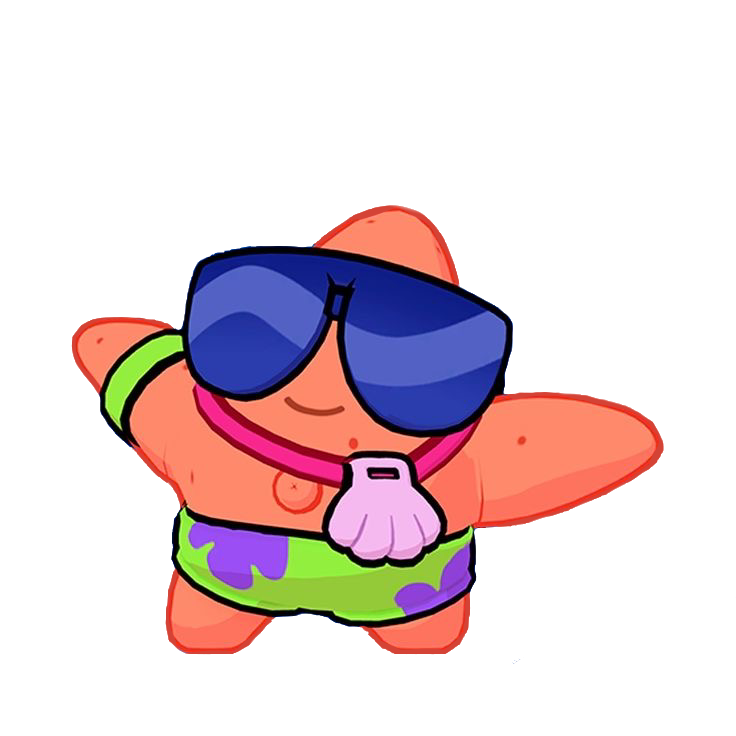
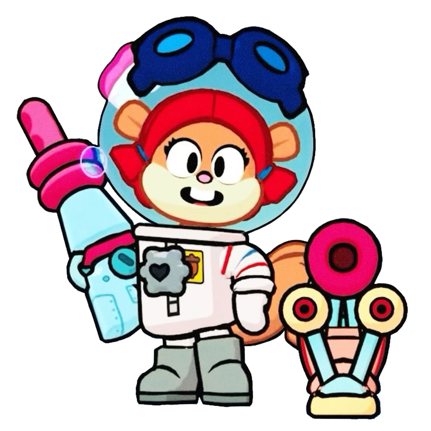
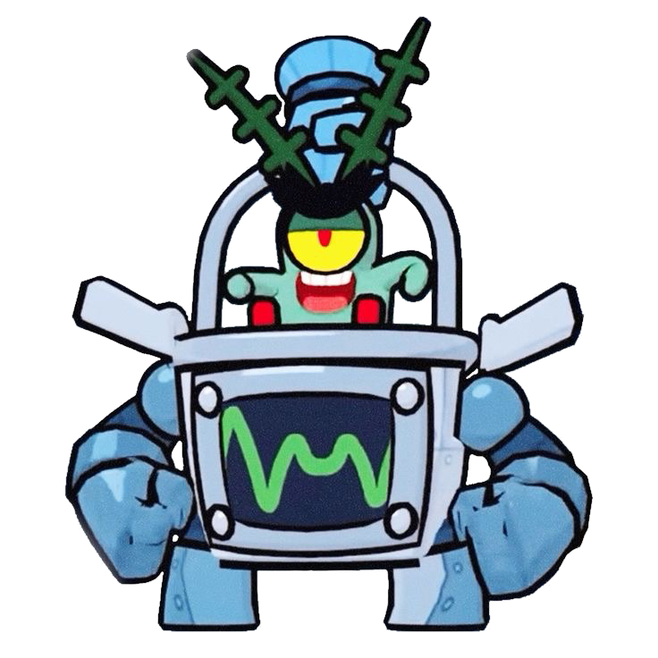
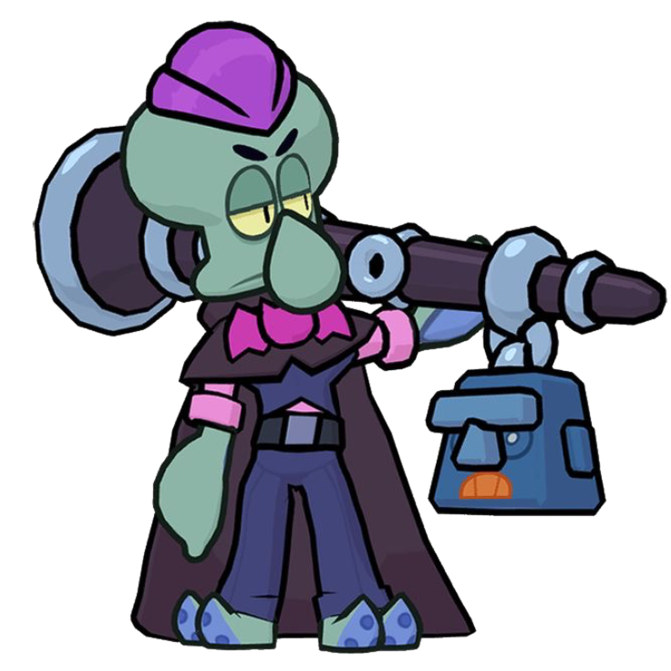
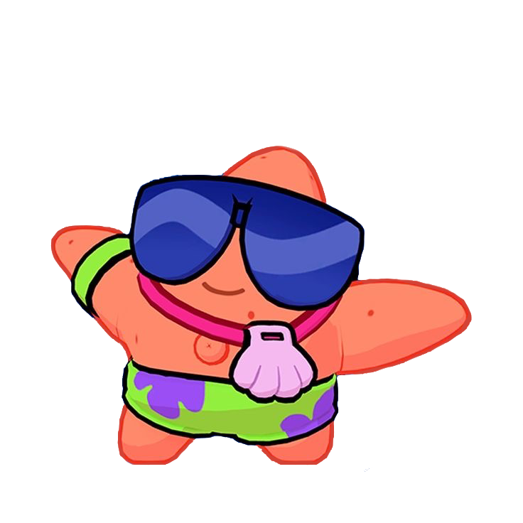

Colaboraciones
Brawl Stars ha hecho muchas colaboraciones. En ellas hay skins, mapas, modificadores (potencionadores), eventos de clubs y nuevos modos de juego pero en este apartado solo veremos las skins de algunas colaboraciones.
¡Empezemos!
Brawl Stars X SpongeBob SquarePants
En 2024, Brawl Stars realizó una colaboración con la famosa serie SpongeBob SquarePants. Este evento se destacó por introducir skins especiales para los brawlers inspirados en los personajes de la serie. Los brawlers como SpongeBob, Patrick, Mr. Krabs, y Squidward recibieron atuendos temáticos, brindando una experiencia única a los jugadores. Además, se creó un nuevo mapa temático llamado Bikini Bottom, que estaba basado en el mundo submarino de la serie. Los jugadores también tuvieron acceso a modos de juego especiales y potenciadores exclusivos durante el evento, lo que añadió una capa adicional de diversión y estrategia a la experiencia. Para promover este evento, el famoso luchador de WWE, John Cena, fue utilizado como portavoz en los trailers.
Algunas skins:
 







Brawl Stars X BT21
En 2022, Brawl Stars se unió a la famosa banda de K-pop BTS para una colaboración única con sus personajes de BT21. Estos personajes fueron creados por los miembros de BTS, y cada uno de los brawlers recibió un skin inspirado en los personajes. Esta colaboración fue un éxito rotundo, no solo por la popularidad de BTS, sino también porque los skins fueron diseñados con mucho detalle y eran muy queridos por los fans de la banda. Además, se lanzaron productos de merchandising como camisetas, tazas, y stickers, inspirados en esta colaboración.
Algunas skins:
Brawl Stars X LINE Friends
Brawl Stars colaboró con LINE Friends para introducir skins inspirados en personajes como Brown, Sally y Cony. Los brawlers como Brock, Colette y Gus fueron transformados en versiones de estos personajes, lo que dio lugar a un evento colorido y amigable. Esta colaboración también incluyó artículos de merchandising y contenido exclusivo dentro del juego. La colaboración añadió un toque tierno al juego, atrayendo a los fanáticos de ambos mundos.
Algunas skins:
Tríos
¿Sabías que en Brawl Stars hay trios de brawlers? Los trios están hechos de brawlers que comparten historias juntos como por ejemplo: Emz, Mortis y Frank que son el trio de Muertes Vivientes porque son una familia que trabaja en la morge.
¿Quieres saber más sobre los tríos?
Hay decenas de tríos con increíbles historias que tiene por contar cada uno. ¡Conoce a todos los trios jugando al Brawl Stars! De momento te dejo algunos tríos para que los conozcas.
Brawl Stars | Supercell
TRÍO DEL VIEJO OESTE

TRÍO SALVAJE


TRÍO PIRATA


TRÍO DE BIOLOGOS


TRÍO DEL PUEBLO


¿Aún te has quedado con las ganas de saber más sobre Brawl Stars?
¡No pasa nada, aquí te dejamos 40 curiosidades que probablemente no sabías!
Genio y Edgar rompieron el juego: Genio causaba bloqueos en iOS con su ataque súper, provocando que el juego se cerrara inesperadamente. Edgar, por otro lado, sobrecargó los servidores de Brawl Stars cuando fue lanzado gratis, ya que la gran afluencia de jugadores intentando desbloquearlo causó problemas de rendimiento en el juego.
Las trampas están prohibidas: Brawl Stars implementa sistemas de detección y penalización para los jugadores que utilizan trampas o métodos de juego desleales. Esto incluye el uso de software de terceros o cualquier otro comportamiento sospechoso que pueda dar una ventaja injusta.
Inició con un modo vertical: En sus primeras fases de desarrollo, Brawl Stars se jugaba en modo vertical. Sin embargo, este diseño no fue tan bien recibido por los jugadores, lo que llevó a Supercell a rediseñar el juego para jugarse en modo horizontal.
Grom compone el mejor equipo: Grom es conocido por ser uno de los mejores brawlers debido a su habilidad para controlar áreas y eliminar enemigos con su ataque preciso y potente.
Hay 5 brawlers con capacidad de curar: Bea, Rosa, Sprout, Shelly y Lou tienen habilidades que les permiten curar a sus compañeros de equipo, lo que añade una capa estratégica importante al juego.
Originalmente tenía un tema espacial: En las primeras etapas del desarrollo, Brawl Stars tenía un tema espacial. Este concepto fue eventualmente abandonado, pero algunas ideas de esa fase temprana todavía pueden encontrarse en el diseño de ciertos brawlers y skins.
Pam era Mamá J y Morty usaba sombrero: Durante el desarrollo, algunos personajes sufrieron cambios significativos. Pam, por ejemplo, inicialmente se llamaba Mamá J, y Mortis usaba un sombrero en lugar de su capucha característica.
Eventos frecuentes: Brawl Stars lanza eventos nuevos casi todos los días, manteniendo el contenido fresco y emocionante para los jugadores. Estos eventos pueden incluir modos de juego especiales, desafíos y recompensas exclusivas.
Fan-made de León: La comunidad de Brawl Stars ha creado una versión fan-made de León como un camaleón gigante, mostrando la creatividad y dedicación de los fans del juego.
Premios y nominaciones: Brawl Stars ha sido nominado y premiado en múltiples ceremonias de premiación de videojuegos, destacando su popularidad y calidad en la industria.
El primer brawler fue Shelly: Shelly fue el primer brawler introducido en el juego y ha sido un personaje icónico desde entonces.
Brawl Stars nació de un equipo pequeño: El juego fue desarrollado inicialmente por un pequeño equipo dentro de Supercell, conocido como el "equipo ninja".
Inspiración de los personajes: Muchos brawlers están inspirados en personajes de la cultura pop, el cine y otros videojuegos.
Mecánicas de juego evolucionadas: Las mecánicas del juego han evolucionado considerablemente desde su beta, incluyendo cambios en la jugabilidad y en el equilibrio de los personajes.
Banda sonora original: Brawl Stars cuenta con una banda sonora original compuesta específicamente para el juego, que incluye varios temas pegadizos.
Crossovers inesperados: Supercell ha realizado crossovers con otras franquicias de juegos y marcas, introduciendo skins y eventos temáticos exclusivos.
Actualizaciones constantes: El juego se actualiza regularmente con nuevos brawlers, skins, mapas y modos de juego, manteniendo a la comunidad activa y comprometida.
La voz de los brawlers: Las voces de los brawlers son proporcionadas por actores de voz profesionales, que añaden personalidad y carácter a cada uno.
La importancia de la comunidad: Supercell presta mucha atención a la retroalimentación de la comunidad de jugadores y realiza cambios en el juego basados en sus sugerencias.
Diseño accesible: Brawl Stars está diseñado para ser accesible y jugable en dispositivos móviles de gama baja, ampliando su alcance a una audiencia global.
Modos de juego innovadores: Además de los modos tradicionales, Brawl Stars experimenta con modos de juego innovadores y temporales que a menudo se convierten en permanentes según la respuesta de los jugadores.
Eventos de esports: Brawl Stars ha ganado popularidad en la escena de los esports, con torneos oficiales y competiciones organizadas a nivel mundial.
Diseño de personajes únicos: Cada brawler tiene un diseño único y distintivo, que refleja su personalidad y habilidades especiales.
Comunidad creativa: Los fans de Brawl Stars son conocidos por su creatividad, produciendo fan art, cosplays y videos inspirados en el juego.
Estrategias y sinergias: El juego fomenta la creación de estrategias y sinergias entre los brawlers, lo que añade profundidad táctica a las partidas.
Traducción a múltiples idiomas: Brawl Stars está disponible en varios idiomas, permitiendo a jugadores de todo el mundo disfrutar del juego en su lengua materna.
Desarrollo colaborativo: El desarrollo de Brawl Stars ha sido un esfuerzo colaborativo entre diferentes equipos dentro de Supercell, aportando diversas perspectivas y talentos.
Diversidad de mapas: El juego cuenta con una gran variedad de mapas, cada uno con su propio diseño y desafíos únicos.
Premios de temporada: Los jugadores pueden obtener premios y recompensas al final de cada temporada, incentivando el juego continuo y competitivo.
Participación de la comunidad: Supercell organiza eventos y desafíos donde la comunidad puede participar activamente, contribuyendo al desarrollo y promoción del juego.
Referencias ocultas: El juego está lleno de referencias ocultas y easter eggs que los jugadores disfrutan descubriendo.
Amigos en el juego: Brawl Stars permite a los jugadores agregar amigos y formar equipos, facilitando el juego cooperativo.
Interacción social: El juego ofrece funciones de chat y clubs, permitiendo a los jugadores interactuar y formar comunidades dentro del juego.
Contenido cosmético: Además de las skins, el juego ofrece otros tipos de contenido cosmético como emotes y gadgets, que permiten a los jugadores personalizar su experiencia de juego.
Eventos de celebración: Supercell celebra eventos especiales en fechas importantes y aniversarios del juego, ofreciendo contenido exclusivo y recompensas especiales.
Mejoras continuas: El equipo de desarrollo de Brawl Stars trabaja constantemente en mejorar la estabilidad y el rendimiento del juego.
Streaming en vivo: Muchos jugadores y equipos de Brawl Stars hacen streaming de sus partidas en plataformas como Twitch y YouTube, compartiendo sus estrategias y jugadas con la comunidad.
Compatibilidad con controladores: Brawl Stars es compatible con controladores externos, ofreciendo una experiencia de juego alternativa para aquellos que prefieren este tipo de control.
Desafíos de creador: Supercell organiza desafíos donde los jugadores pueden diseñar sus propios mapas y modos de juego, algunos de los cuales son seleccionados para ser añadidos al juego oficialmente.
Apoyo a causas benéficas: Brawl Stars ha participado en eventos benéficos, donando ingresos de ciertos ítems y eventos a organizaciones de caridad.
 Braian Arancibia
Braian Arancibia Aya El Baarar
Aya El Baarar